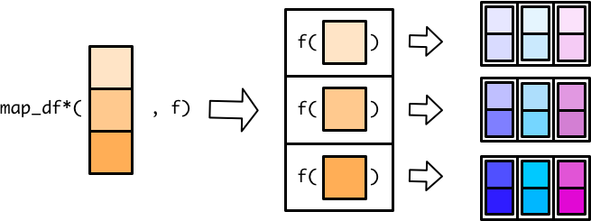
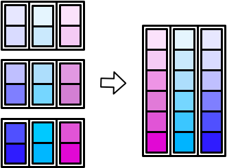
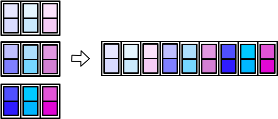
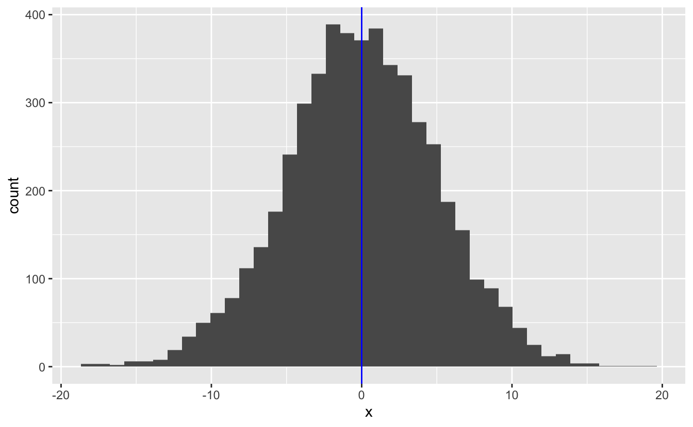
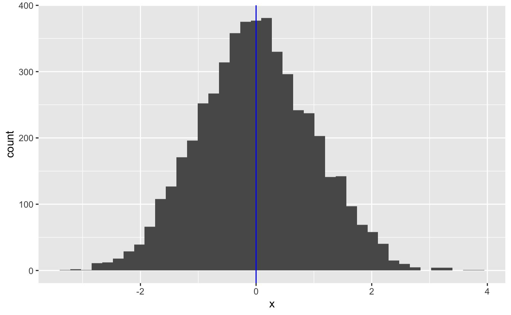
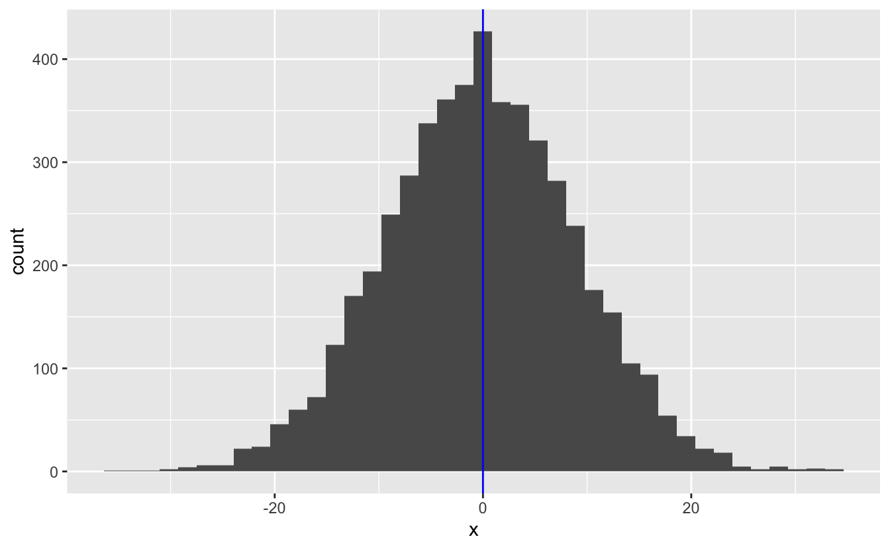

11 Other purrr functions
library(tidyverse)In this reading, you’ll learn about two more map variants, map_dfr() and map_dfc(). Then, you’ll learn about walk(), as well as some useful purrr functions that work with functions that return either TRUE or FALSE.
The purrr package contains more functions than we can cover. The purrr cheatsheet is a great way to find helpful functions when you encounter a new type of iteration problem.
11.1 Map functions that output tibbles
Instead of creating an atomic vector or list, the map variants map_dfr() and map_dfc() create a tibble.
With these map functions, the assembly line worker creates a tibble for each input element, and the output conveyor belt ends up with a collection of tibbles.

The worker then combines all the small tibbles into a single, larger tibble. There are multiple ways to combine smaller tibbles into a larger tibble. map_dfr() (r for rows) stacks the smaller tibbles on top of each other.

map_dfc() (c for columns) stacks them side-by-side.

There are _dfr and _dfc variants of pmap() and map2() as well. In the following sections, we’ll cover map_dfr() and map_dfc() in more detail.
11.1.1 _dfr
map_dfr() is useful when reading in data from multiple files. The following code reads in several very simple csv files, each of which contains the name of a different dinosaur genus.
read_csv("data/purrr-extras/file_001.csv")
#> # A tibble: 1 × 2
#> id genus
#> <dbl> <chr>
#> 1 1 Hoplitosaurus
read_csv("data/purrr-extras/file_002.csv")
#> # A tibble: 1 × 2
#> id genus
#> <dbl> <chr>
#> 1 2 Herrerasaurus
read_csv("data/purrr-extras/file_003.csv")
#> # A tibble: 1 × 2
#> id genus
#> <dbl> <chr>
#> 1 3 Coelophysisread_csv() produces a tibble, and so we can use map_dfr() to map over all three file names and bind the resulting individual tibbles into a single tibble.
files <- str_glue("data/purrr-extras/file_00{1:3}.csv")
files
#> data/purrr-extras/file_001.csv
#> data/purrr-extras/file_002.csv
#> data/purrr-extras/file_003.csv
files %>%
map_dfr(read_csv)
#> # A tibble: 3 × 2
#> id genus
#> <dbl> <chr>
#> 1 1 Hoplitosaurus
#> 2 2 Herrerasaurus
#> 3 3 CoelophysisThe result is a tibble with three rows and two columns, because map_dfr() aligns the columns of the individual tibbles by name.
The individual tibbles can have different numbers of rows or columns. map_dfr() just creates a column for each unique column name. If some of the individual tibbles lack a column that others have, map_dfr() fills in with NA values.
read_csv("data/purrr-extras/file_004.csv")
#> # A tibble: 2 × 3
#> id genus start_period
#> <dbl> <chr> <chr>
#> 1 4 Dilophosaurus Sinemurian
#> 2 5 Segisaurus Pliensbachian
c(files, "data/purrr-extras/file_004.csv") %>%
map_dfr(read_csv)
#> # A tibble: 5 × 3
#> id genus start_period
#> <dbl> <chr> <chr>
#> 1 1 Hoplitosaurus <NA>
#> 2 2 Herrerasaurus <NA>
#> 3 3 Coelophysis <NA>
#> 4 4 Dilophosaurus Sinemurian
#> 5 5 Segisaurus Pliensbachian11.1.2 _dfc
map_dfc() is typically less useful than map_dfr() because it relies on row position to stack the tibbles side-by-side. Row position is prone to error, and it will often be difficult to check if the data in each row is aligned correctly. However, if you have data with variables in different places and are positive the rows are aligned, map_dfc() may be appropriate.
Unfortunately, even if the individual tibbles contain a unique identifier for each row, map_dfc() doesn’t use the identifiers to verify that the rows are aligned correctly, nor does it combine identically named columns.
read_csv("data/purrr-extras/file_005.csv")
#> # A tibble: 1 × 3
#> id diet start_period
#> <dbl> <chr> <chr>
#> 1 1 herbivore Barremian
c("data/purrr-extras/file_001.csv", "data/purrr-extras/file_005.csv") %>%
map_dfc(read_csv)
#> # A tibble: 1 × 5
#> id...1 genus id...3 diet start_period
#> <dbl> <chr> <dbl> <chr> <chr>
#> 1 1 Hoplitosaurus 1 herbivore BarremianInstead, you end up with a duplicated column (id...1 and id...3).
If you have a unique identifier for each row, it is much better to join on that identifier.
left_join(
read_csv("data/purrr-extras/file_001.csv"),
read_csv("data/purrr-extras/file_005.csv"),
by = "id"
)
#> # A tibble: 1 × 4
#> id genus diet start_period
#> <dbl> <chr> <chr> <chr>
#> 1 1 Hoplitosaurus herbivore BarremianAlso, because map_dfc() combines tibbles by row position, the tibbles can have different numbers of columns, but they should have the same number of rows.
11.2 Walk
The walk functions work similarly to the map functions, but you use them when you’re interested in applying a function that performs an action instead of producing data (e.g., print()).
The walk functions are useful for performing actions like writing files and printing plots. For example, say we used purrr to generate a list of plots.
set.seed(745)
plot_rnorm <- function(sd) {
tibble(x = rnorm(n = 5000, mean = 0, sd = sd)) %>%
ggplot(aes(x)) +
geom_histogram(bins = 40) +
geom_vline(xintercept = 0, color = "blue")
}
plots <-
c(5, 1, 9) %>%
map(plot_rnorm)We can now use walk() to print them out.
plots %>%
walk(print)
The walk functions look like they don’t return anything, but they actually return their input invisibly. When functions return something invisibly, it just means they don’t print their return value out when you call them. This functionality makes the walk functions useful in pipes. You can call a walk function to perform an action, get your input back, and continue operating on that input.
11.3 Predicate functions
In Chapter 7, we introduced predicate functions, which are functions that return a single TRUE or FALSE. purrr includes several useful functions that work with predicate functions.
keep() and discard() iterate over a vector and keep or discard only those elements for which the predicate function returns TRUE.
x <-
list(
a = c(1, 2),
b = c(4, 5, 6),
c = c("a", "z")
)
x %>%
discard(is.character)
#> $a
#> [1] 1 2
#>
#> $b
#> [1] 4 5 6x %>%
keep(~ length(.) == 2)
#> $a
#> [1] 1 2
#>
#> $c
#> [1] "a" "z"With tibbles, you can use keep() and discard() to select columns that meet a certain condition.
mpg %>%
keep(is.numeric)
#> # A tibble: 234 × 5
#> displ year cyl cty hwy
#> <dbl> <int> <int> <int> <int>
#> 1 1.8 1999 4 18 29
#> 2 1.8 1999 4 21 29
#> 3 2 2008 4 20 31
#> 4 2 2008 4 21 30
#> 5 2.8 1999 6 16 26
#> 6 2.8 1999 6 18 26
#> # … with 228 more rowssome() looks at the entire input vector and returns TRUE if the predicate is true for any element of the vector and FAlSE otherwise.
mpg %>%
some(is.numeric)
#> [1] TRUEFor every() to return TRUE, every element of the vector must meet the predicate.
mpg %>%
every(is.numeric)
#> [1] FALSEOther useful purrr functions that use predicate functions include head_while(), compact(), has_element(), and detect(). Take a look at the purrr cheatsheet for details.